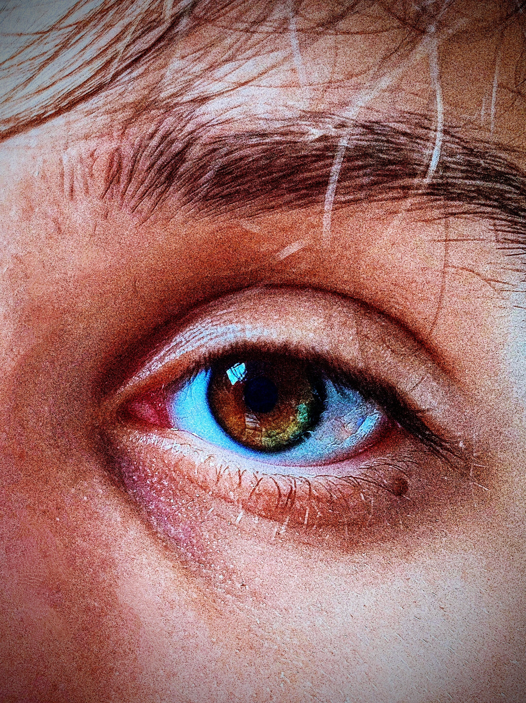

Damian :D
Jestem Damian, mam 17 lat. Mieszkam w Sławnie. Uczę się na profilu technik programista. Lubię białą czekoladę oraz serial Rick i Morthy. Gram w gierki, latam dronem, czasami też aktualizuje Windowsy rodzinie.
youtube.com/@damianpoborskiPosty
